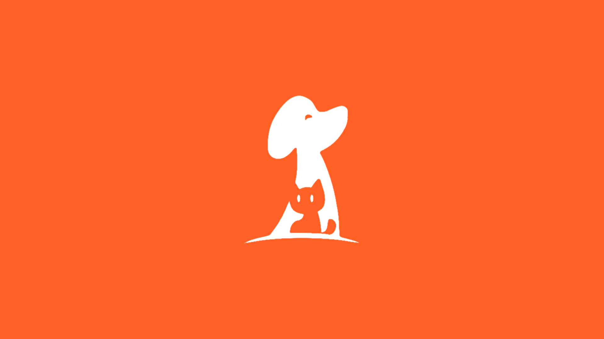
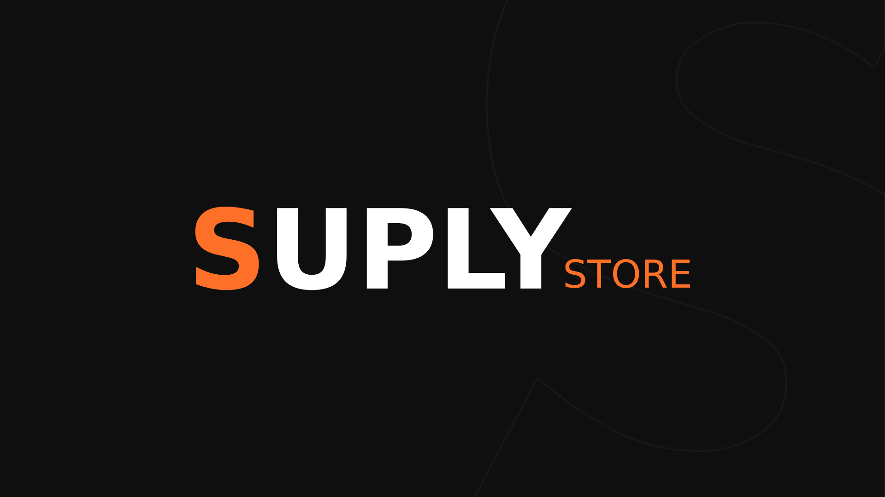

Sobre mim
Olá, me chamo João Luft, sou um jovem amante da tecnologia e atuo e estudo programação há 2 anos, com foco no Desenvolvimento Web onde realizo múltiplos projetos na área, procurando aperfeiçoar a cada dia mais minhas habilidades.
Sobre mim
Olá, me chamo João Luft, sou um jovem amante da tecnologia e atuo e estudo programação há 2 anos, com foco no Desenvolvimento Web onde realizei multiplos projetos na área, procurando aperfeiçoar a cada dia mais minhas habilidades.
Projetos

Findpetz
Aplicação feita com o intuito da melhor administração dos seus pets, contendo um sistema de feed com postagens e perfis para cada pet. A Findpetz visa a segurança do seu pet, sabendo disso criou sua coleira inteligente que possui um QR Code que leva diretamente ao perfil do pet no aplicativo, podendo assim verificar os dados do dono, histórico vacinal e muito mais.
Clique para ver mais+Tech Boost
Software pensado na otimização dos sistemas operacionais Windows com foco no mundo Gamer, utilizando tecnologias nativas do sistema operacional para trazer um melhor desempenho e latitude para jogos e programas pesados sem deixar de lado a usabilidade, assim trazendo o melhor dos dois mundos para uma experiência só.
Clique para ver mais+
Suply Store
Sistema web (e-commerce) que visa vender roupas e acessórios para um público mais jovem, desenvolvido preservando a facilidade na usabilidade e com um sistema integrado diretamente com a API MercadoPago para a total segurança no trânsito de dados do sistema de pagamentos. Fornecendo assim, uma logística de total transparência e agilidade.
Clique para ver mais+Habilidades
Front-end
Linguagens
HTML, CSS e Javascript
Tecnologias
- React
- jQuery
- Bootstrap
- Tailwind CSS
- Materialize CSS
Back-end
Linguagens
Javascript, Typescript, Python e PHP
Tecnologias
- Node JS
- Express
- PostgreSQL, MongoDB e MySQL
- Electron JS
- Flask

Soft Skills
“A chave do sucesso nos negócios é perceber para onde o mundo está indo e chegar lá primeiro”
Bill GatesHabilidades comportamentais
- Trabalho em equipe
- Inteligência emocional
- Gerenciamento de tempo
- Comunicação objetiva
- Autodidata